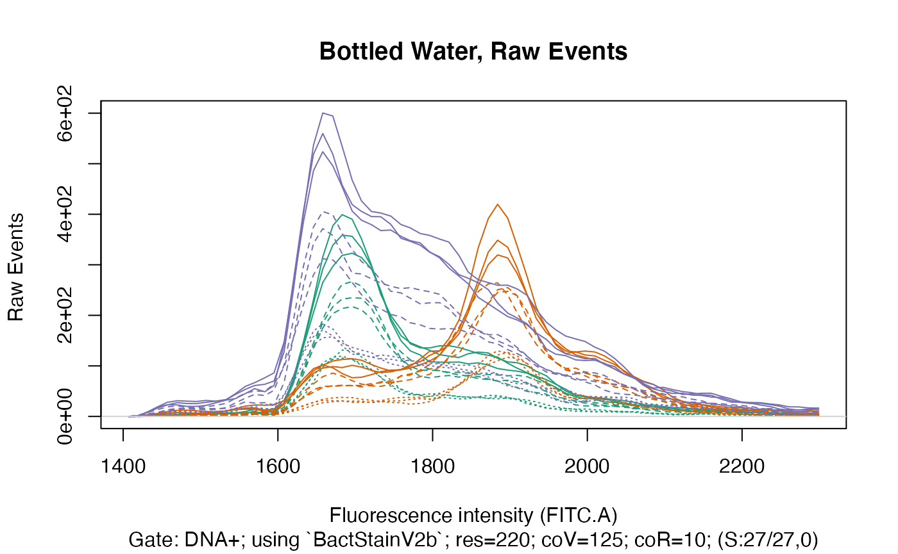
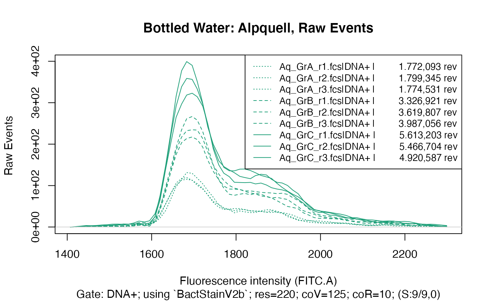
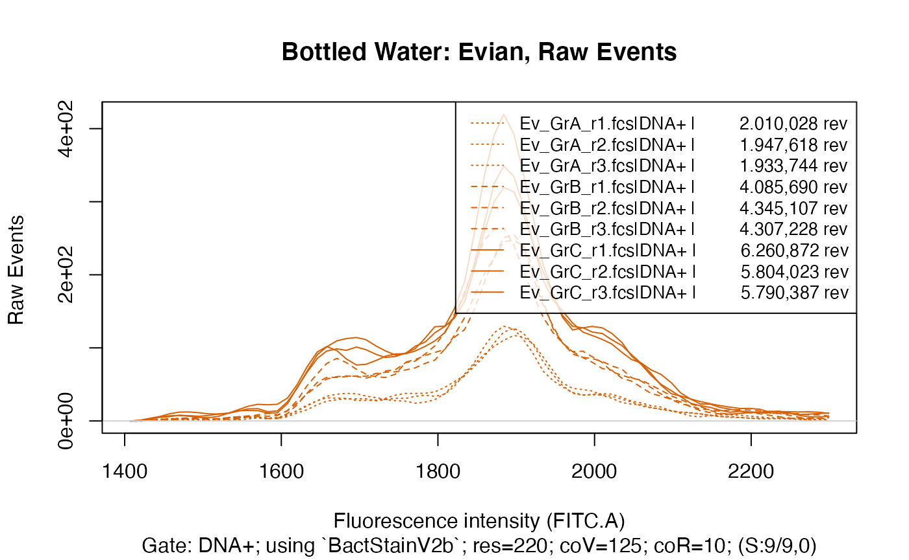
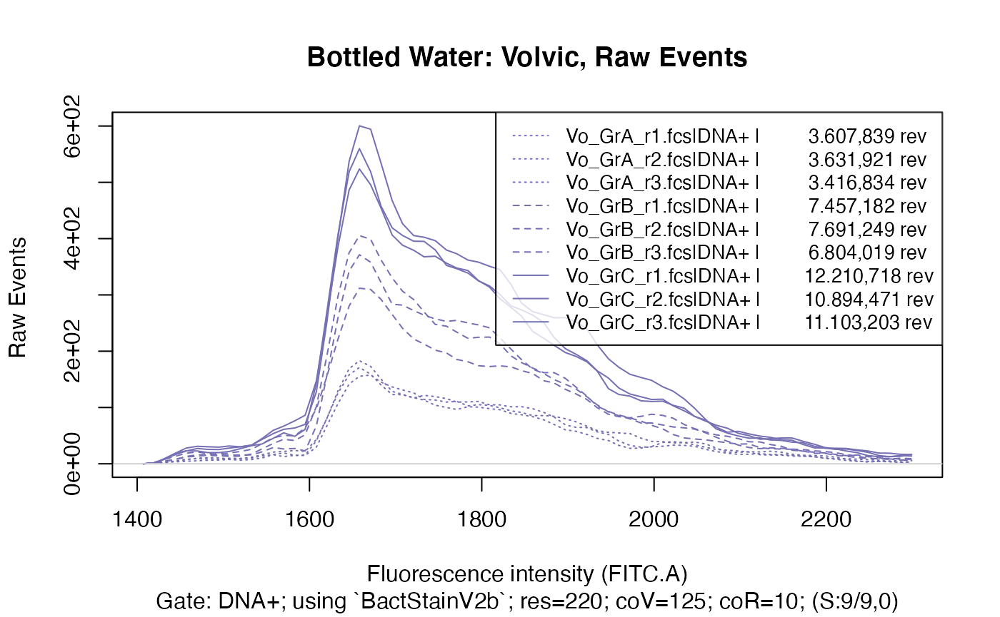
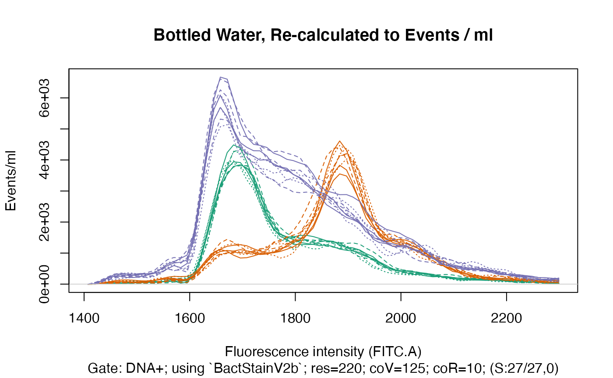

If the FCM-machine used for data acquisition does have a volumetric measurement module and the fcs files contain volumetric data, it is possible to re-calculate any extracted fluorescence distribution to events per volume unit.
In other words, the y-axis of any fluorescence distribution can be displayed in a fixed scale, i.e. events per volume unit. This enables the comparison of numbers on a fixed scale across samples, groups or experiments, instead of being confined to compare percentages of sub-groups of an overall population.
Set up Example
To fully appreciate the benefit of being able to re-calculate any fluorescence distribution to events per volume unit, let´s look at a practical example.
library(flowdex)
src <- "https://github.com/bpollner/data/raw/main/bottled_water/bottled_water.zip"
td <- tempdir()
# this is downloading and unzipping the bottled water data if not already present:
flowdex::check_download_data(where = td, data_source = src, dsname = "bottled_Water")
#
setwd(paste0(td, "/bottled_water")) # set the working directory to the unzipped folderThe unzipped folder ‘bottled_water’ in tempdir() contains the
standard folder structure required by flowdex.
Description of Dataset
All samples are water samples stained with cybergreen following the method as described in:
Prest, E. I., Hammes, F., Kotzsch, S., van Loosdrecht, M. C., & Vrouwenvelder, J. S. (2013). Monitoring microbiological changes in drinking water systems using a fast and reproducible flow cytometric method. Water Research, 47(19), 7131-7142 https://doi.org/10.1016/j.watres.2013.07.051Three in Austria commercially available bottled waters were examined:
Alpquell, Evian, and Volvic.It was the purpose of the experiment to compare the number of autochthonous bacteria in the water types and to distinguish the water types by their fluorescence profile.
-
From each water type, 9 samples were taken:
For 3 samples, labelled ‘GrA’ (Group A), data acquisition was done for ~30 seconds.
For 3 samples, labelled ‘GrB’ (Group B), data acquisition was done for ~60 seconds.
For 3 samples, labelled ‘GrC’ (Group C), data acquisition was done for ~90 seconds.
-
A sample-ID string has been provided at the time of data acquisition, providing the class-variables
C_waterName: The name of the bottled water
C_Repl: The replicate, ranging from r1 to r3
C_group: The group.
Visualize Fluorescence Distributions
The main difference between samples within each water type in the dataset downloaded above is of course the different time data acquisition was done for — 30, 60 or 90 seconds. Hence, for each group within a water type, considerable differences in the number of recorded events can be expected, resulting in different amplitudes of the fluorescence distributions when using the raw-events, i.e. not re-calculated to events per volume unit.
But as each of the 9 samples within each water type comes from the same water, their fluorescence distributions should be quite similar. This can be achieved by re-calculating the fluorescence distribution to sample volume, thereby equalizing the differences in time data acquisition was done for.
Make Gating Set
The differences in recorded events can easily be visualized by using
makefdmat() or flowdexit() and by setting the
argument rcv (‘recalculate
to volume’) to FALSE.
First, set up some custom color and custom linetype to optimize the graphical display:
nrSa <- 9 # the number of samples per water type
nrSaGr <- 3 # the number of samples in each group (different lengths)
colp <- RColorBrewer::brewer.pal(3, "Dark2") # obtain 3 colors
# colors
cc <- c(rep(colp[1],nrSa), rep(colp[2],nrSa), rep(colp[3],nrSa))
col_aq <- colp[1] # the color for the 'Alpquell' water
col_ev <- colp[2] # the color for the 'Evian' water
col_vo <- colp[3] # the color for the 'Volvic' water
# linetype
silt <- c(rep(3,nrSaGr), rep(2,nrSaGr), rep(1,nrSaGr)) # custom linetype for a single water type
clt <- rep(silt, 3) # custom linetype for the complete dataset
# bandpass
bp <- c(1400, 2300) # the bandpass that we will user later onNow use makeAddGatingSet() to produce a gating set from
the fcs files:
gs <- makeAddGatingSet()
#> Reading in fcs files... ok.
#> Producing gating set... Applying fjbiexp transformation... ok.
#> Gating: (1 gate)
#> done!You can look at the gated data by calling:
plotgates(gs, spl="C_waterName") # is exporting the pdf to '/plots'NOT Re-Calculating to Sample Volume
First visualize the raw-events, i.e. the fluorescence distribution
not re-calculated to events per volume (achieved by
setting rcv to FALSE):
fdmat_no_calc <- applyBandpass(makefdmat(gs, rcv = FALSE), bp)
#> DNA+: Extracting binned data on FITC.A (res=220)... ok.
#> Exporting data (1 gate) to xlsx...ok.
ti <- "Bottled Water, Raw Events"
plotFlscDist(fdmat_no_calc, ccol=cc, clt = clt, ti = ti, fns = "_raw", leg=FALSE, toPdf = FALSE) # we choose to NOT have a legend here 
To make the three sub-groups within each water type even better visible, we will plot each water type individually:
fdmat_aq <- flowdexit(patt="Aq", rcv = FALSE, expo = FALSE, stf = FALSE)
#> Reading in fcs files... ok.
#> Producing gating set... Applying fjbiexp transformation... ok.
#> Gating: (1 gate)
#> done!
#> DNA+: Extracting binned data on FITC.A (res=220)... ok.
ti <- "Bottled Water: Alpquell, Raw Events"
plotFlscDist(applyBandpass(fdmat_aq, bp), ccol=col_aq, clt=silt, ti=ti, toPdf = FALSE)
#
fdmat_ev <- flowdexit(patt="Ev", rcv = FALSE, expo = FALSE, stf = FALSE)
#> Reading in fcs files... ok.
#> Producing gating set... Applying fjbiexp transformation... ok.
#> Gating: (1 gate)
#> done!
#> DNA+: Extracting binned data on FITC.A (res=220)... ok.
ti <- "Bottled Water: Evian, Raw Events"
plotFlscDist(applyBandpass(fdmat_ev, bp), ccol=col_ev, clt=silt, ti=ti, toPdf = FALSE)
#
fdmat_vo <- flowdexit(patt="Vo", rcv = FALSE, expo = FALSE, stf = FALSE)
#> Reading in fcs files... ok.
#> Producing gating set... Applying fjbiexp transformation... ok.
#> Gating: (1 gate)
#> done!
#> DNA+: Extracting binned data on FITC.A (res=220)... ok.
ti <- "Bottled Water: Volvic, Raw Events"
plotFlscDist(applyBandpass(fdmat_vo, bp), ccol=col_vo, clt=silt, ti=ti, toPdf = FALSE)
This clearly shows that within each water type there are three distinct groups, caused of course by the different time data acquisition was done for in each group, resulting in a considerably different number of events recorded in each group.
Re-Calculating to Sample Volume
As all samples within each water type should be quite similar, we can equalize the differences shown above by re-calculating all samples to their sample volume, i.e. the volume of sample that was acquired during data acquisition:
fdmat_calc <- applyBandpass(makefdmat(gs), bp)
#> DNA+: Extracting binned data on FITC.A (res=220) and recalc. to volume... ok.
#> Exporting data (1 gate) to xlsx...ok.
ti <- "Bottled Water, Re-calculated to Events / ml"
plotFlscDist(fdmat_calc, ccol=cc, clt = clt, ti = ti, leg = FALSE, toPdf = FALSE)
Even though within each water type the samples showed considerable differences in the number of recorded events (see above), when re-calculating the events and the resulting fluorescence distributions to the volume of the sample that was acquired during data acquisition, we can obtain very similar fluorescence distributions for each sample within each water type.